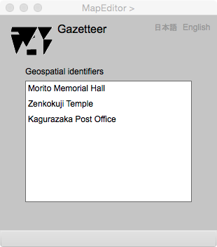

Gazetteer
Introduction
This page displays the list of keywords such as geographic names held by features. The geometric feature moves to the center of the map by clicking a keyword on the list.
Gazetteer

Figure 1. Page for a geospatial index
FIELDS
Geospatial identifiers (選択可能)
このリストの中のキーワードをクリックすると，対応する地物が地図の中心に移動する．
BUTTONS
日本語
今あなたが読んでいるドキュメントが表示されます．
English
You can read the tutorial written in English.